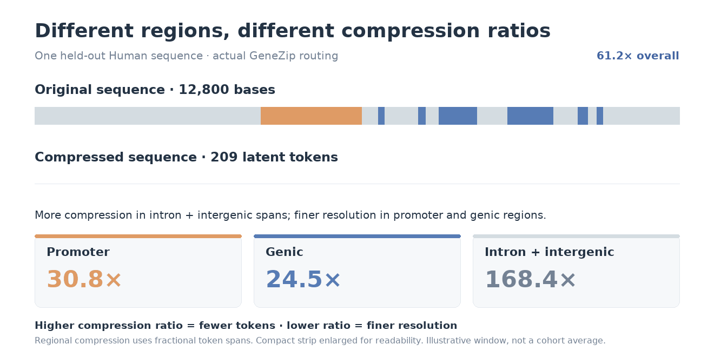
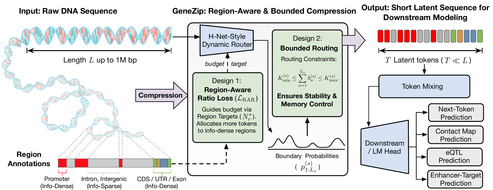
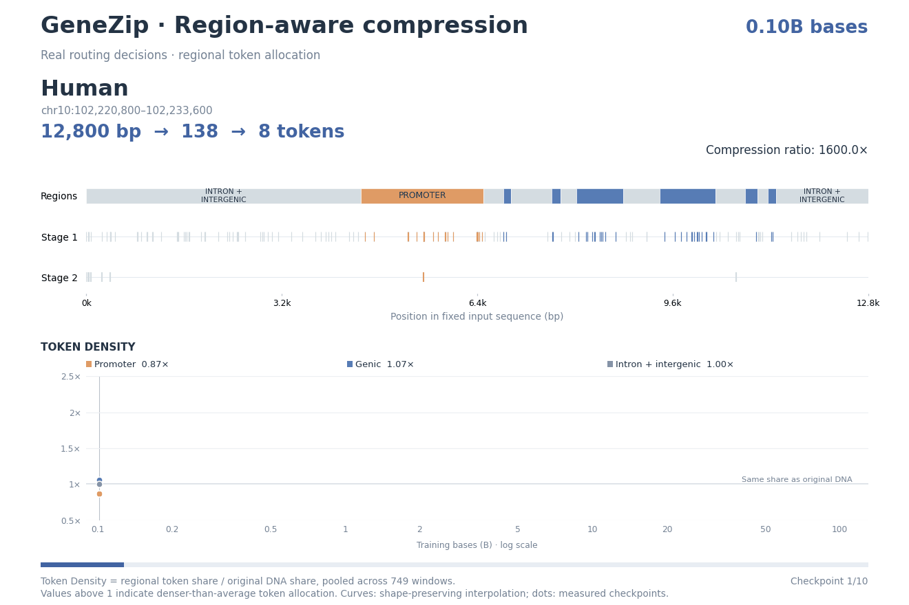
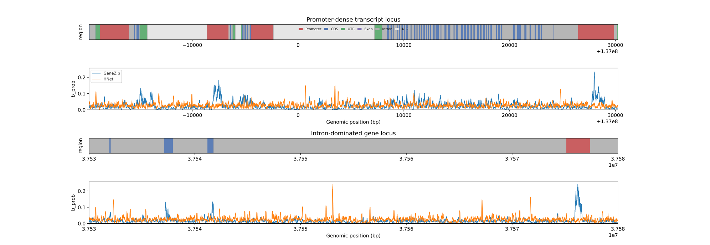
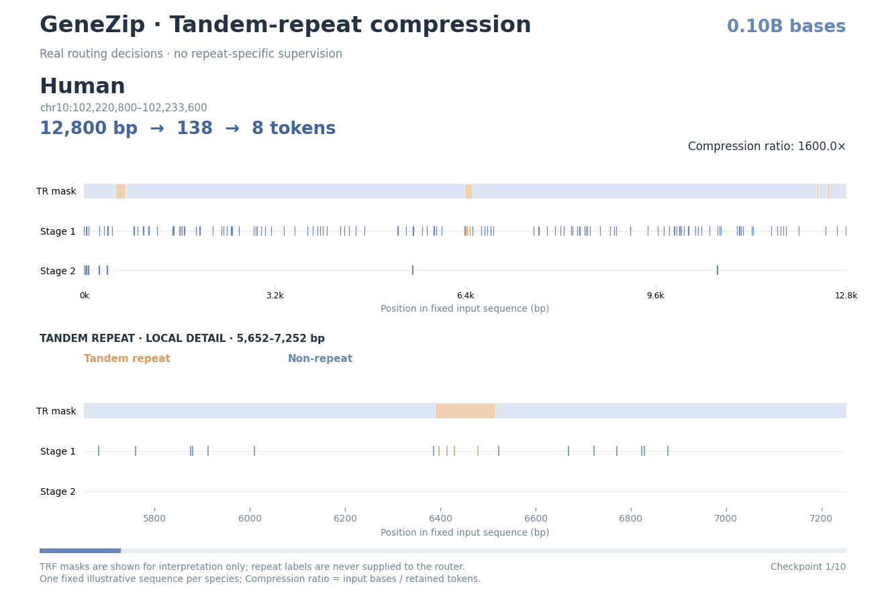
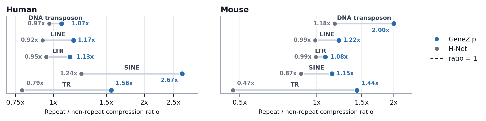

Dynamic routing
Predict chunk boundaries from DNA sequence, so chunk lengths can vary along the genome.
NeurIPS 2026
1Mila – Québec AI Institute2Université de Montréal3University of Ottawa
4National Research Council of Canada5HEC Montréal
01 / Motivation
Promoters, exons and long intronic or intergenic spans carry different kinds of information. GeneZip learns where to retain finer resolution, so long DNA sequences can be compressed while preserving information useful for genomic prediction.

02 / Method
GeneZip builds on H-Net's dynamic routing to turn raw DNA into a shorter sequence of latent tokens. Regional targets guide where resolution is retained, while bounded routing keeps token counts within a tractable range.

Predict chunk boundaries from DNA sequence, so chunk lengths can vary along the genome.
Training objective
Use gene-structure annotations to train the router toward regional compression targets, preserving finer resolution in promoters and genic regions under the default prior.
Routing constraint
Keep allocated token counts within configurable bounds to prevent too many or too few tokens during training, helping stabilize optimization.
Lower target ratios preserve finer resolution. Higher ratios allocate fewer tokens per base.
Training targets
Target-based illustration · not measured routing
Each preset represents a separately pretrained model. Targets guide learning; observed compression need not equal the targets.
03 / Compression Analysis
137.6×
Sequence compression ratio
GeneZip-70M · pretraining validation
+0.31 PPL
Validation perplexity increase
vs. uncompressed Mamba2-84M
36.1×
Inference speedup
100 × 450-kb inputs · GeneZip-70M vs. JanusDNA-7.7M · single H100 · largest verified batch per model
GeneZip learns regional preferences from human DNA and applies them to unseen human and mouse sequences, without annotations at inference.


GeneZip is trained with gene-structure labels, without repeat-specific supervision. Yet it learns to allocate fewer tokens per base to repetitive DNA than to the surrounding sequence: emergent redundancy-aware compression.

Animations show selected examples; token strips are enlarged. Compression ratio = input bases / retained latent tokens.
GeneZip and H-Net predict repeat sequences with nearly identical perplexity, but allocate tokens differently. GeneZip has higher repeat-to-background compression ratios in all ten evaluated subsets, spanning transposon-derived and tandem repeats.

GeneZip combines efficient long-context inference with the best average rank among models with leakage-controlled pretraining. It leads this group on CMP, eQTL and TISP.
3.13
Best average rank ↓
Among the leakage-controlled pretraining group. Task ranks are computed across all ten benchmark models.
36.1×
Faster inference than JanusDNA
6.34 s vs. 228.63 s for 100 × 450-kb inputs on one H100.
| Model | Inference (s) ↓ | CMP SCC ↑ | eQTL AUROC ↑ | ETGP AUPRC ↑ | TISP PCC ↑ | Avg. rank ↓ |
|---|---|---|---|---|---|---|
| Mamba2-84M | 40.80 | 0.111 | 0.762 | 0.322 | 0.294 | 6.25 |
| U-Net-70M | 4.85 | 0.131 | 0.807 | 0.390 | 0.178 | 4.00 |
| H-Net-70M | 11.78 | 0.118 | 0.791 | 0.225 | 0.303 | 5.75 |
| GeneZip-70M | 6.34 | 0.133 | 0.817 | 0.375 | 0.336 | 3.13 |
Inference is measured separately with each model's largest verified batch size and benchmark routing settings.
Under leakage-controlled pretraining, GeneZip leads on CMP, eQTL and TISP and has the best average rank.
| Model | Pretraining group | Compression ratio | Inference (s) ↓ | CMP SCC ↑ | eQTL AUROC ↑ | ETGP AUPRC ↑ | TISP PCC ↑ | Avg. rank ↓ |
|---|---|---|---|---|---|---|---|---|
| HyenaDNA-6.6M | DNALongBench-official | 1.0× | 22.86 | 0.115 | 0.514 | 0.249 | 0.132 | 8.00 |
| Caduceus-Ph-7.7M | DNALongBench-official | 1.0× | 35.06 | 0.133 | 0.566 | 0.380 | 0.109 | 5.63 |
| Caduceus-PS-7.7M | DNALongBench-official | 1.0× | 68.36 | 0.127 | 0.538 | 0.376 | 0.108 | 7.00 |
| JanusDNA-7.7M | External-pretraining | 1.0× | 228.63 | 0.159 | 0.840 | 0.438 | 0.002 | 3.25 |
| NTv3-100M-pre | External-pretraining | 127.99× | 13.27 | 0.136 | 0.792 | 0.440 | 0.194 | 2.75 |
| Evo2-1B | External-pretraining | 1.0× | OOM | 0.018 | 0.754 | 0.095 | -0.002 | 9.25 |
| Mamba2-84M | Leakage-controlled-pretraining | 1.0× | 40.80 | 0.111 | 0.762 | 0.322 | 0.294 | 6.25 |
| U-Net-70M | Leakage-controlled-pretraining | 127.99× | 4.85 | 0.131 | 0.807 | 0.390 | 0.178 | 4.00 |
| H-Net-70M | Leakage-controlled-pretraining | 122.19× | 11.78 | 0.118 | 0.791 | 0.225 | 0.303 | 5.75 |
| GeneZip-70M | Leakage-controlled-pretraining | 137.59× | 6.34 | 0.133 | 0.817 | 0.375 | 0.336 | 3.13 |
H-Net and GeneZip share 70,000-token ceilings per stage, with no additional floors, for eQTL, ETGP and TISP. Average rank is calculated among all ten main-table models. Compression reports pretraining-validation measurements; inference is a separate benchmark with model-specific batch sizes and routing settings.
Paper and evaluation protocols
GeneZip takes 6.34 s versus H-Net’s 11.78 s in the separate inference benchmark.
Different downstream tasks have different biological focuses.
Held-out test scores; all y-axes are truncated.
For TISP, the promoter-focused priors—Default (Promoter+Genic) and PromoterDistal—perform well. GeneZip lets users choose regional pretraining targets to match the biological focus of their downstream task.
Compression is measured on 3,000 shared validation windows and varies across priors.
Target = base anchor × region multiplier. NIG / DIG: near / distal intergenic.
@inproceedings{zhao2026genezip,
title = {GeneZip: Region-Aware Compression for Long-Context DNA Modeling},
author = {Zhao, Jianan and Liu, Xixian and Zhan, Zhihao and Yuan, Xinyu and Guo, Hongyu and Tang, Jian},
booktitle = {Advances in Neural Information Processing Systems},
year = {2026}
}